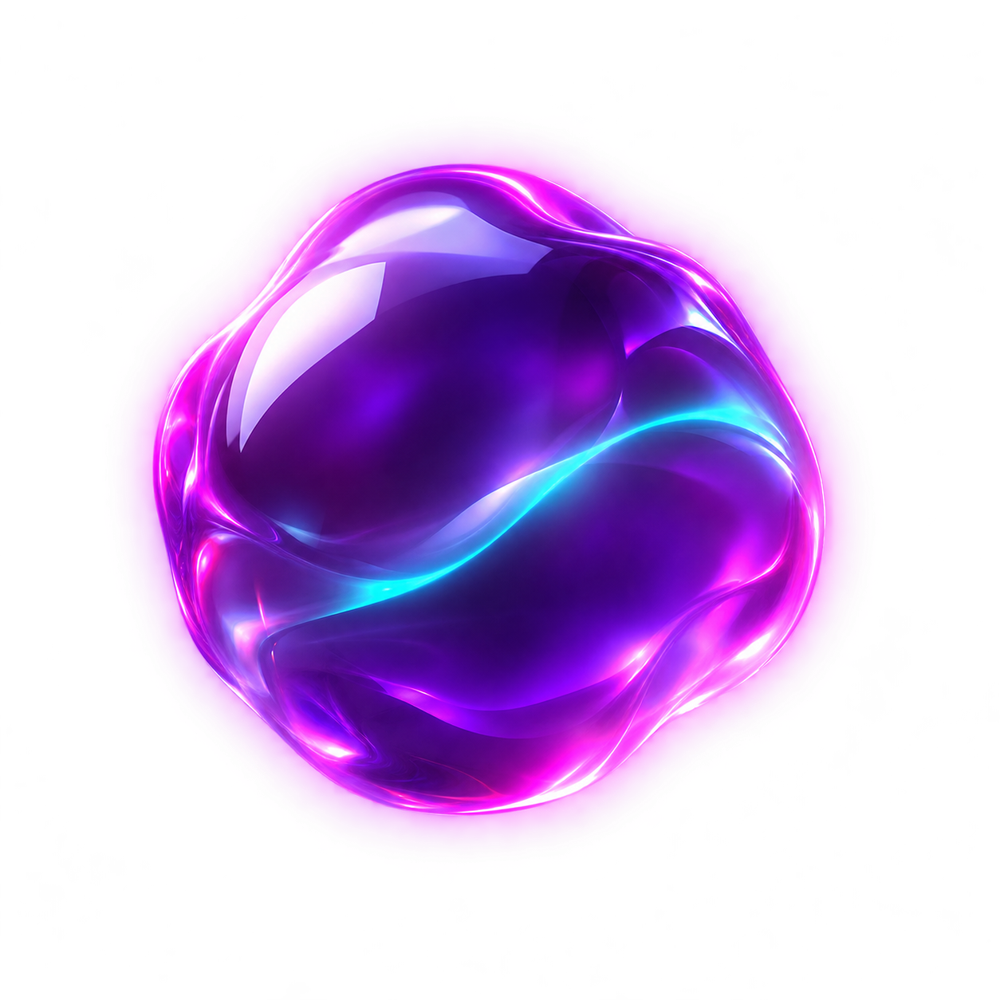

LOCAL DESKTOP AGENT
Applications
Your personal agent for every application, from first draft to final submission.
YOUR WORKSPACE
What are we working on?
Tell Rax the program, opportunity, or application. It can find the form, use your saved context, and finish it for you.

Rax is ready to work with you.
Describe the task in your own words, or paste a direct application link.
APPLICATION WORKSPACE
Application
Select an application to continue.
Suggested actions
Live activityReady
Rax's actions will appear here.
Message Rax...
YOUR WORK
All applications
Open a record to see its activity, files, and saved answers.
No applications yet.
REUSABLE CONTEXT
Your knowledge
Verified experience, projects, and facts Rax can reuse. Keep passwords and API keys out of this file.
LOCAL CONFIGURATION
Agent settings
Checking API key…
Sound notificationsChimes for questions, completed runs, and problems.